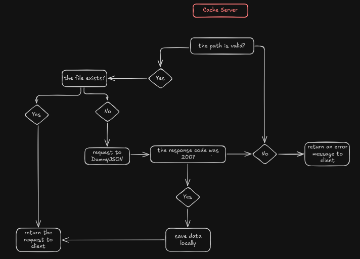

As a back-end enthusiast, I decided to study cache mechanisms in more depth. During my studies, I came across a type of server called cache server, which is a proxy server that stores data. Some of its main goals are: reduce the workload on the main server, speed up response times for users, and decrease bandwidth usage.
To better understand how it works, I decided to simulate a simple cache server using sockets. While there are several online tutorials that helped me get started, most of them were written in Python, but I wanted to implement my solution in pure Java.
The client sends a request specifying a desired path, such as "/users". The cache server accepts
the socket connection, retrieves the requested path, and searches for a file named "users". If the
file is found locally, its contents are returned to the client. Otherwise, the cache server fetches
the data from the main server, stores it locally, and then returns the response to the client.
At first, the implementation seemed very simple, but soon I found myself losing focus on what I actually needed to accomplish. I also realized that I needed to revisit some Java concepts, such as working with sockets, files and making native HTTP requests.
Since I find it more convenient to visualize concepts through drawings, I created some sketches to better understand the flow.
The first diagram illustrates the main process.
However, when I started writing methods and handling responses, the cache server became too complex for me. To see things even better, I created a second diagram.
In the end, this was a fun project. I was able to simulate a cache server to understand better how it works, improve my Java skills, and revisit important programming concepts.
The code can be found